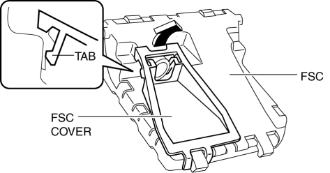
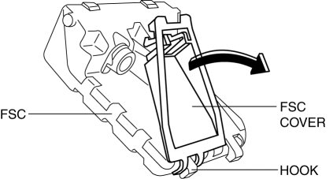

< Previous
Next >
2014 -
Mazda6 -
Body and Accessories
FORWARD SENSING CAMERA (FSC) COVER REMOVAL/INSTALLATION
1. Disconnect the negative battery cable. (See NEGATIVE BATTERY CABLE DISCONNECTION/CONNECTION [SKYACTIV-G 2.5].)
2. Remove the cover. (See FORWARD SENSING CAMERA (FSC) REMOVAL/INSTALLATION.)
3. Remove the forward sensing camera (FSC). (See FORWARD SENSING CAMERA (FSC) REMOVAL/INSTALLATION.)
4. Pull the FSC cover in the direction of the arrow shown in the figure and detach tab of FSC cover.

5. Rotate the FSC cover in the direction of the arrow shown in the figure, remove the FSC cover from FSC hook, and remove the FSC cover.

6. Install in the reverse order of removal.
< Previous
Next >
© 2012 Mazda North American Operations, U.S.A.